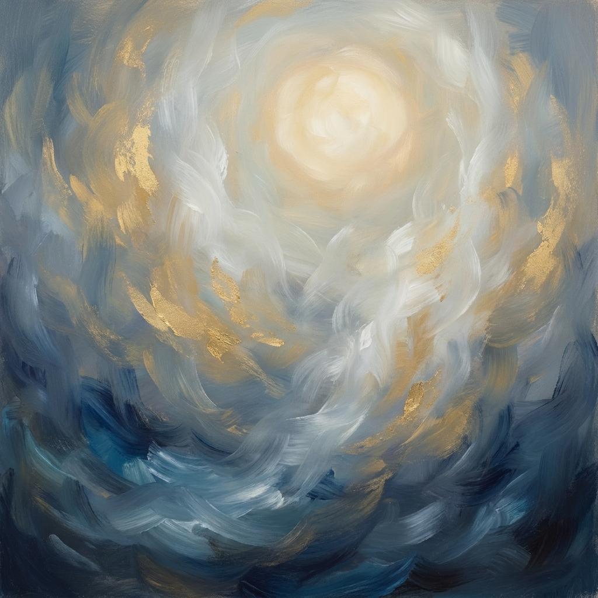

Riflessione

E penso ai pensieri ancora vivi
di quelli che son già morti.
E penso a Dio.
E penso a Dio,
che pensa a loro.
di quelli che son già morti.
E penso a Dio.
E penso a Dio,
che pensa a loro.
Paola Spremulli

Paola Spremulli